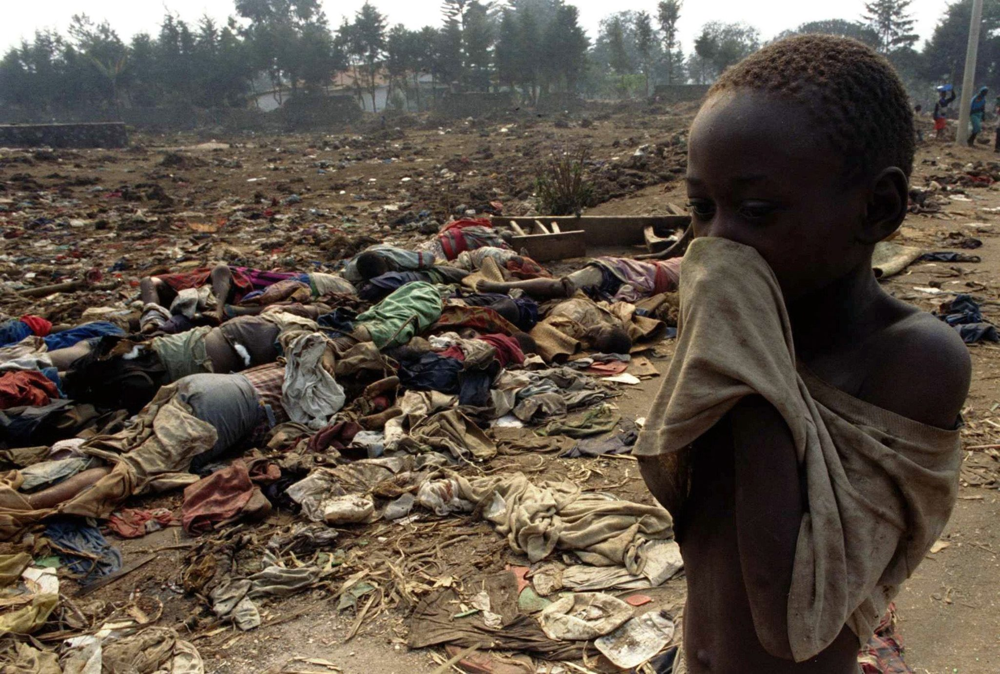
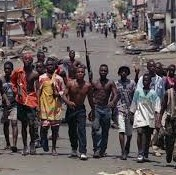
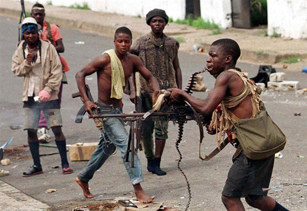
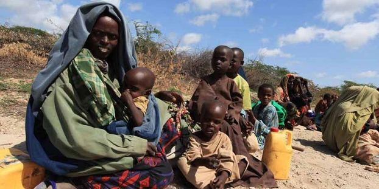
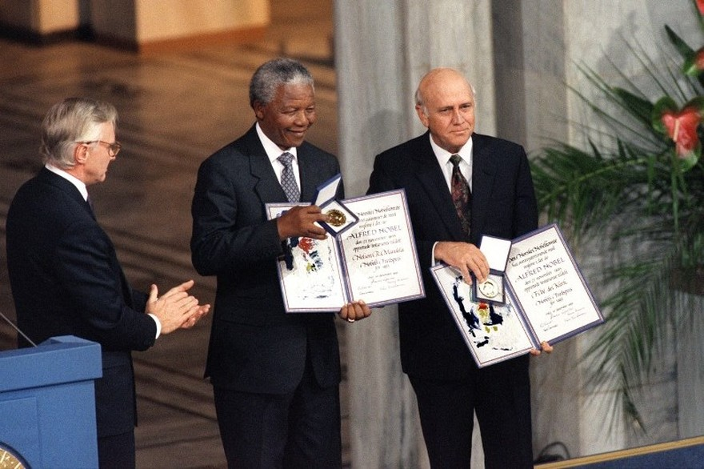
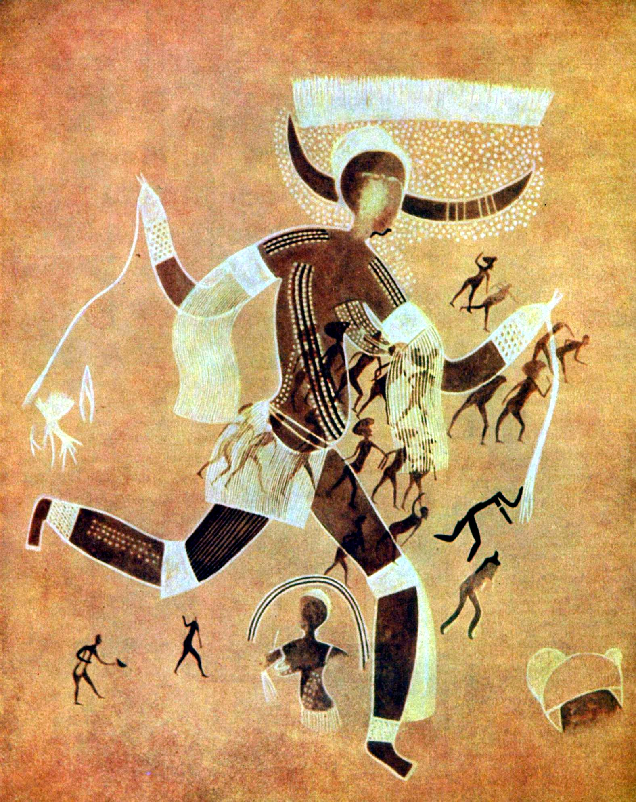
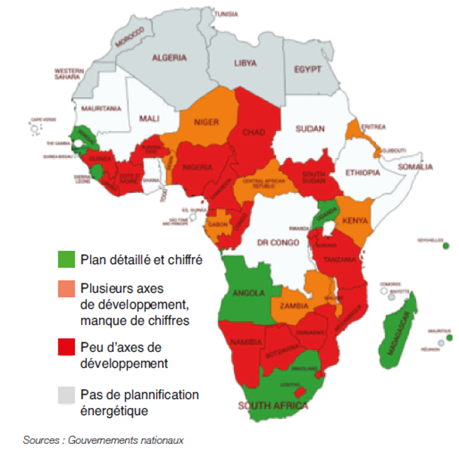

Le continent africain a toujours connu de nombreuses instabilités politiques et économiques. Dans les années 90, l’Afrique a subi la fin de la guerre froide ainsi qu’une forte mondialisation économique qui vont amener une série de conflits nouveaux et fragiliser les Etats africains. La politique de chaque pays vise à des résolutions qui restent trop souvent enfermées dans une vision privilégiant des objectifs humanitaires ou de développement, alors qu’il faudrait adopter une perspective politique globale. Beaucoup de pays d’Afrique sont en guerre ou confrontés à la violence civile dans les années 90.
En effet, une multitude de guerres a eu lieu sur le continent africain rendant leur image plus fragile. L’année 1991 enregistre deux événements retentissants sur ce continent. D’abord, la fin de l’apartheid (politique dite de « développement séparé » affectant des populations selon des critères raciaux ou ethniques dans des zones géographiques déterminées) en Afrique du Sud, suivie de la libération de Nelson Mandela, et de son élection à la tête du pays en 1994 qui a eu un impact sur l’ensemble du continent. L’autre événement marquant de l’année 1991 est l’annulation, par le gouvernement algérien, des élections législatives à la suite de l’arrivée en tête au premier tour du premier groupe islamique (FIS). La guerre civile qui suivit, fera au moins 50 000 morts, et s’étend sur l’essentiel de la décennie. Cette guerre préfigure la « guerre globale contre le terrorisme » consécutive aux attentats du 11 septembre 2001, qui généralisera la lutte contre l’islam radical à l’ensemble de la planète. Ensuite, la guerre civile algérienne opposant l'État à l'opposition islamiste, appelée « Décennie noire », fit entre 60 000 et 150 000 victimes. Ces actions contre les groupes islamiques vont entrainer les attentats contre les ambassades américaines à Nairobi et Dar es Salam (1998). De plus, la signature en 1993 des « accords d’Oslo » n’a pas empêché que la condition des palestiniens ne cesse d’empirer depuis cette année. Malgré différents accords votés, les choses ont du mal a évoluer en Afrique.
Le génocide des Tutsis au Rwanda a eu lieu d'avril à juillet 1994. L'ONU a estimé qu'environ 800 000 Rwandais, en majorité tutsis, ont perdu la vie durant cette courte période de trois mois. L'ampleur du massacre, sa cruauté et le nombre d'exécutants en font un des évènements les plus atroces du XXe siècle.

La guerre civile au Liberia (1989-1996) coûta la vie à près de 150 000 personnes avec des civils pour la plupart des victimes, et a provoqué un effondrement total de l'État du Liberia. La deuxième guerre civile libérienne démarra en 1999 et fit entre 150 000 et 300 000 victimes. En effet, certains pays ont connu plusieurs conflits en quelques années.


L’Afrique a aussi connu de nombreux problèmes de famine comme par exemple la guerre civile somalienne qui a plongé la Somalie dans une famine et a fait près de 220 000 victimes à partir de 1992. La deuxième guerre du Congo démarra en 1998, engendrant maladies, famines et destruction du lien social. Le bilan serait de 4 à 6 millions de morts, le conflit se poursuivant en 2015.

En 1999, l’Afrique était le théâtre de plus de la moitié des conflits armés se déroulant dans le monde. Ceci empêchant un développement à l’échelle mondiale.
Cette décennie est comme un récapitulatif des tragédies du siècle passé : violence de masse, radicalisation de la politique sous l’effet de la colonisation, usage des médias pour inciter au passage à l’acte…
Culture
Un développement économique et l’introduction dans les années 90 de la notion de développement humain ont accentué la place consacrée à la culture dans les politiques de développement. D’autant plus que les industries culturelles occupent au niveau mondial la sixième place dans la liste des secteurs les plus porteurs économiquement (formation, tourisme, exportation, ect...).
En juillet 1993, Frederik de Klerk reçoit le prix Nobel de la paix avec Nelson Mandela pour avoir mis un terme à l'apartheid.

A ce moment, de nombreux films sont parus et ont connu un grand succès au sein du contient. Voici quelques exemples de films sortis dans les années 90 :
A cette période, l’Afrique n’était pas beaucoup développée. Cependant, la culture africaine a été fortement exprimée à travers des romans très diversifiés. Comme par exemple, l’auteur africain, Ahmadou Kourouma, qui a écrit en 1998 « En attendant le vote des bêtes sauvages ». Celui-ci raconte l’histoire d’un chasseur qui devient dictateur et qui a pour volonté de décrire les maux de l’Afrique coloniale : tyrannie, anarchie, pauvreté… Aussi, l’écrivaine Ken Bugul a écrit « Cendres et Braises » en 1994.
Le poids culturel de l’Afrique reste médiocre pendant cette période même si celui-ci ne cesse de se développer.
A cette période, l’Afrique n’était pas beaucoup développée. Cependant, la culture africaine a été fortement exprimée à travers des romans très diversifiés. Comme par exemple, l’auteur africain, Ahmadou Kourouma, qui a écrit en 1998 « En attendant le vote des bêtes sauvages ». Celui-ci raconte l’histoire d’un chasseur qui devient dictateur et qui a pour volonté de décrire les maux de l’Afrique coloniale : tyrannie, anarchie, pauvreté… Aussi, l’écrivaine Ken Bugul a écrit « Cendres et Braises » en 1994 qui fait référence au même sujet : le triste sort des africains par rapport au reste du monde. Grâce à ces auteurs et écrivains, le développement de la culture africaine va répendre dans plusieurs régions du monde dans les années 90 comme par exemple le Brésil, l'Inde ou le Canada.

Le poids culturel de l’Afrique reste médiocre pendant cette période même si celui-ci ne cesse de se développer.
Nouvelles technologies
L’Afrique a connu la plus forte croissance des technologies numériques pendant les années 90 lors du XIXème siècle. Ayant de nombreux défauts à ses débuts, mais toujours inégale, la progression de leurs utilisateurs dépasse toutes les prévisions et entraine un espoir de développement. Il est vrai que l’engouement des sociétés africaines pour ces nouvelles technologies est réel et leurs capacités de développement sont fortes. Elles s’accrochent avec beaucoup d’obstacles et de handicaps au mouvement planétaire de la troisième révolution industrielle, la révolution numérique. Portée par cette innovation capitale de ces dernières décennies, cette révolution est fondée sur la maîtrise de l’information, l’accès au savoir et la capacité de chacun à interagir avec le reste du monde.

La mise en place des nouvelles technologies sur le contient africain a été fortement évoluée pendant les années 90. Celui-ci a toujours essayé de rattraper son retard technologique par rapport au reste du monde.